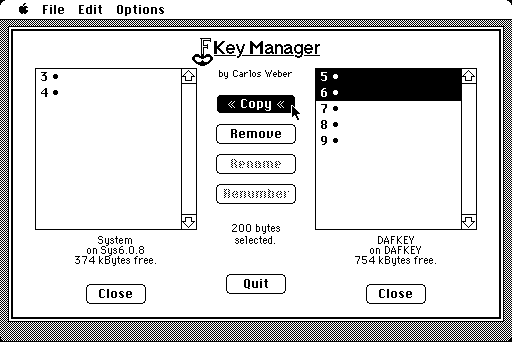

Download
fkeymanager.zip (86K) FKey Manager 3.0 repackaged into a zipped hfs disk image and checksum file. The disk image can be mounted with Mini vMac.
fkeymanager.sit.hqx (164K) FKey Manager 3.0 in the original format.
copyright: Carlos Weber, M.D
mod date: Aug 8, 1987
license: free for non-commercial use
"Install and manage FKEYs. The interface is similar to that of Font/DA Mover." For Macintosh Plus and later.
The manual is a MacWrite document. If you don't have MacWrite, you can use FullWrite.

If you find these downloads useful, please consider helping the Gryphel Project, which hosts them.
Here are the md5 checksums for the downloads, signed with Gryphel Key 5:
--------- GRY SIGNED TEXT --------- 35408d87a4eaa3236d4a1897b83e0ce4 fkeymanager.zip 455e0625205bd5d39cab246a58cb5c13 fkeymanager.sit.hqx ------- BEGIN GRY SIGNATURE ------- Gry/4Xa8CFcUzxdN/H5grWuEZYEJKlthUVpLdNFPL6zQ5Ujk9vRtONlbgvDa0mY4 qvyCvQGaYWr7OxqEQxHUctCNlYcnc9X7hg8AN9hiWIGAodaS3kuuS9ibWozfA6n4 hJlg+ge/+C+QZBml0v77KjT47b2ttr+XzhLZoEWzxF7vYNOk878/hsrwgbx3Udt6 -------- END GRY SIGNATURE --------